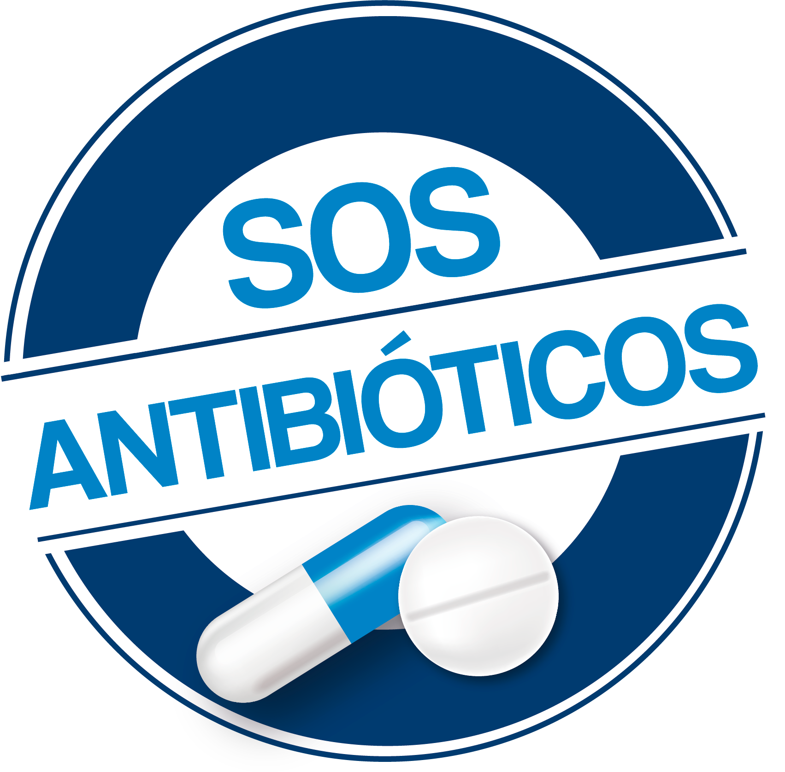
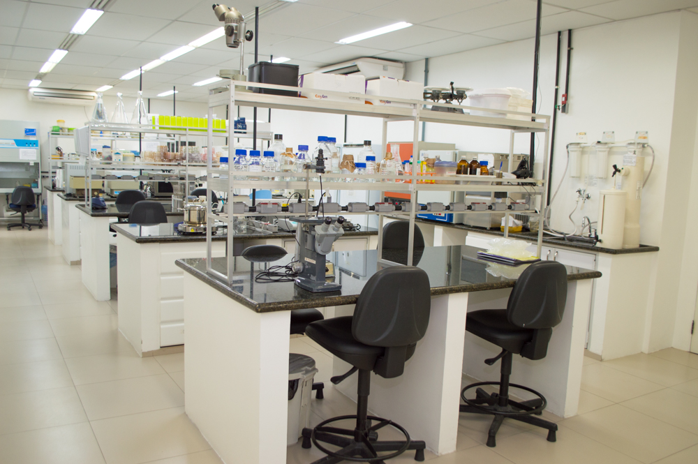
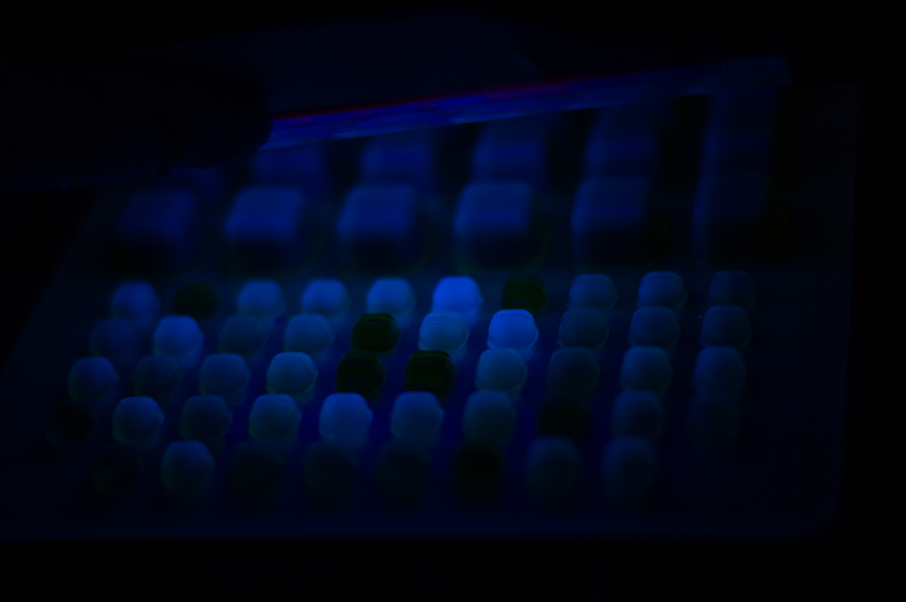
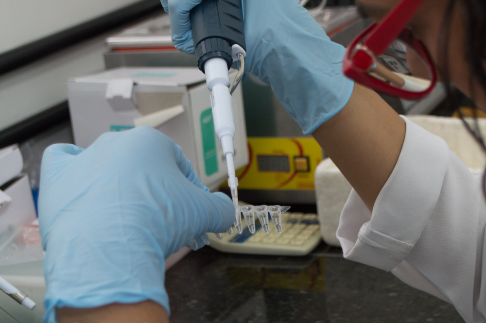
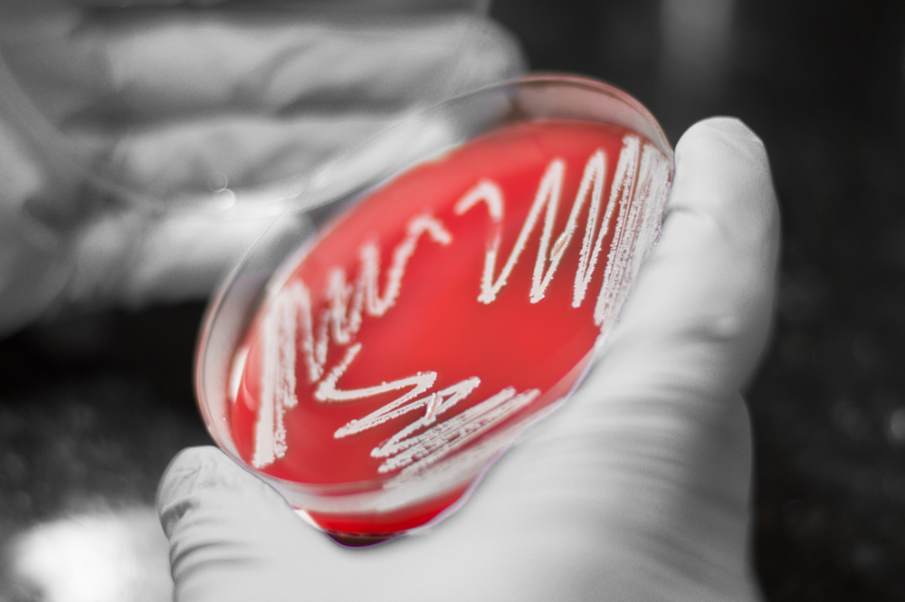

Carregando
Levamos informação confiável sobre resistência antimicrobiana para as redes sociais, escolas
e para toda a sociedade.
Uma em cada seis infecções bacterianas confirmadas em 2023 já apresenta resistência.
A resistência antimicrobiana ocorre quando microrganismos deixam de responder aos medicamentos. O resultado são infecções mais difíceis de tratar, maior tempo de internação e aumento da mortalidade.
O problema ultrapassa hospitais e envolve saúde humana, produção animal e meio ambiente.
A resposta exige a abordagem One Health, integrando esses três pilares.
Automedicação, interrupção precoce de tratamentos e prescrições inadequadas aceleram a seleção de bactérias resistentes.
O uso intensivo de antimicrobianos na produção animal favorece a disseminação de resistência ao longo da cadeia alimentar.
Resíduos farmacêuticos e microrganismos resistentes contaminam solos e recursos hídricos, ampliando o problema
A resistência não reconhece fronteiras e compromete avanços médicos essenciais em escala mundial.
Produção de conteúdos fundamentados em evidências científicas, traduzindo conhecimento técnico em linguagem clara, sem comprometer o rigor acadêmico.
Estratégias de divulgação científica em redes sociais, ampliando o alcance da informação qualificada sobre resistência antimicrobiana.
Oficinas e ações educativas voltadas a estudantes do ensino básico, promovendo o uso responsável de antibióticos desde a formação inicial.
Atividades formativas para profissionais da saúde, alinhadas às diretrizes nacionais e internacionais de uso racional de antimicrobianos.
O SOS Antibióticos é um projeto de extensão universitária dedicado ao enfrentamento da resistência antimicrobiana por meio da educação científica, da comunicação estratégica e da atuação comunitária. Conectamos universidade e sociedade com base em evidências, responsabilidade e impacto social.
Sob coordenação da Profª Raquel Regina Bonelli, o SOS Antibióticos surgiu na UFRJ para combater a Resistência aos Antimicrobianos (RAM).
O que nasceu na Semana Mundial de Conscientização sobre o Uso de Antimicrobianos em 2021, evoluiu para um projeto de extensão permanente em 2023, conectando a ciência do Instituto de Microbiologia Paulo de Góes à sociedade.
Professora Associada · UFRJ
Doutora pela Universität Bonn (Alemanha) e mestre pela UFSC, é pesquisadora no Instituto de Microbiologia Paulo de Góes. Lidera investigações estratégicas sobre resistência bacteriana, atuando na vanguarda de soluções tecnológicas como nanopartículas e bacteriocinas.
Ensino, pesquisa e formação de profissionais no campo da microbiologia médica, com foco em resistência antimicrobiana e patógenos bacterianos gram-negativos.




Siga a ciência
Resistência antimicrobiana, pesquisas científicas recentes e promoção do uso racional de antibióticos. Conectando universidade e sociedade por meio da divulgação baseada em evidências.
@sos_antibioticosSiga o projeto, compartilhe o conteúdo e ajude a levar informação científica de qualidade para mais pessoas. Cada compartilhamento importa.
@sos_antibioticos no Instagram